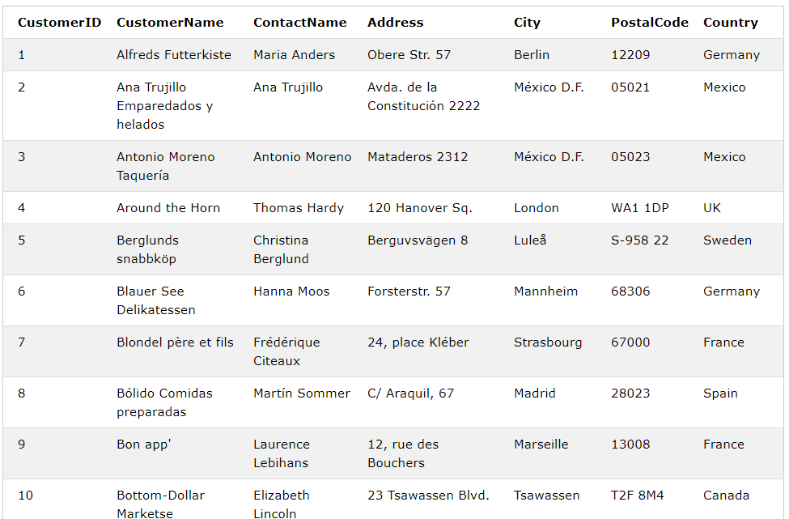

In this week, we will learn how to add a local database to Android applications.
What is a database?
A database is an organized collection of structured information, or data, typically stored electronically in a computer system. A database is usually controlled by a database management system (DBMS). [oracle.com]
Android uses SQLite as a database management system.
What language does SQLite use to communicate?
SQLite uses SQL language (Structured Query Language)
So, what is SQL?
SQL is a language that allows you to access and manipulate databases. SQL statements are used to execute tasks such as add data to a database or retrieve data from a database. SQL is used by nearly all relational databases to query, manipulate, and define data, and to provide access control.
Now, let's have an example. The depicted below is an excerpt from a table called 'Customers' [Ref WeSchools] and you can notice the following:
- Tables consist of rows and columns
- Each column has a name
- Each row has the same set of columns
- Each cell stores one value only
- The data in a column have the same data type
- The table has a column that works as an index (CustomerID). This column is unique and cannot contain NULL values. This column is called the 'primary key'.

What if we need to retrieve the customers who live in Germany, then we would call:
SELECT * FROM Customers WHERE Country='Germany';
Where:
- 'Customers' is the table name
- '*' means fetch all the columns
- 'WHERE' is the row filter. It selects the row that matches the provided criteria.
and here is the output after executing the above SQL statement
 As you can see, all the values in the last column 'Country' is Germany.
As you can see, all the values in the last column 'Country' is Germany.
SQLite, Rooms, and LiveData

- SQLite database: is a relational database management system that is used by Android to store relational data.Â
- DAO:Â Data Access Objects are the main classes where you define your database interactions. They can include a variety of query methods.
- Entities: Each entity represents one table in the database
- Room database:Â The room database object provides the interface to the underlying SQLite database.
- Repository:Â It's a class that contains all of the code necessary for directly handling all data sources used by the application. This avoids the need for the UI controller and ViewModel to contain code that directly accesses sources such as databases or web services.
- ViewModel:Â A ViewModel object provides the data for a specific UI component, such as a fragment or activity, and contains data-handling business logic to communicate with the model.
- LiveData: Its a data holder that allows a value to become observable. In other words, an observable object has the ability to notify other objects when changes to its data occur thereby solving the problem of making sure that the user interface always matches the data within the ViewModel.
Let's develop an application that generates customers randomly. Each customer is represented by a name and address as shown below:

Entities
As aforementioned, an entity is a Java class that defines a table in the database.
Now, let's create a table the following attributes
| name in java |
name in db |
datatype |
|
|---|
| id |
customerId |
integer |
Primary Key
NonNull |
| name |
customerName |
string |
|
| address |
customerAddress |
string |
|
package com.fit2081.rooms.provider;
import androidx.annotation.NonNull;
import androidx.room.ColumnInfo;
import androidx.room.Entity;
import androidx.room.PrimaryKey;
@Entity(tableName = "customers")
public class Customer {
@PrimaryKey(autoGenerate = true)
@NonNull
@ColumnInfo(name = "customerId")
private int id;
@ColumnInfo(name = "customerName")
private String name;
@ColumnInfo(name = "customerAddress")
private String address;
public Customer(String name, String address) {
this.name = name;
this.address = address;
}
public int getId() {
return id;
}
public String getName() {
return name;
}
public String getAddress() {
return address;
}
public void setId(@NonNull int id) {
this.id = id;
}
}
Notes
- line@8: the annotation @Entity is required to define the class as a Room Entity. It also specifies the table name.
- the class 'Customers' has three attributes id, name, and address. Each attribute has an annotation 'ColumnInfo' that specifies the column name in the database
- line@10: the annotation '@PrimaryKey' makes the id as a primary key for the current table which the ' @NonNull' ensures that this column will not be saved without a value.
Room Database
In this class, we will define the Room Database (database might contain one or more tables)
package com.fit2081.rooms.provider;
import android.content.Context;
import androidx.room.Database;
import androidx.room.Room;
import androidx.room.RoomDatabase;
import java.util.concurrent.ExecutorService;
import java.util.concurrent.Executors;
@Database(entities = {Customer.class}, version = 1)
public abstract class CustomerDatabase extends RoomDatabase {
public static final String CUSTOMER_DATABASE_NAME = "customer_database";
public abstract CustomerDao customerDao();
// marking the instance as volatile to ensure atomic access to the variable
private static volatile CustomerDatabase INSTANCE;
private static final int NUMBER_OF_THREADS = 4;
static final ExecutorService databaseWriteExecutor =
Executors.newFixedThreadPool(NUMBER_OF_THREADS);
static CustomerDatabase getDatabase(final Context context) {
if (INSTANCE == null) {
synchronized (CustomerDatabase.class) {
if (INSTANCE == null) {
INSTANCE = Room.databaseBuilder(context.getApplicationContext(),
CustomerDatabase.class, CUSTOMER_DATABASE_NAME)
.build();
}
}
}
return INSTANCE;
}
}
Note:
- Line@10: The '@Database' annotation is required to consider the current class as a Room database. It specifies the list of entities and the current version. The version is required for upgrading or downgrading the current scheme.
- Line@20: the 'databaseWriteExecutor' instance will be used by the repository to execute the DAO methods
- Line@23: the 'getDatabase' method returns a reference to the current database instance if it is not null. Otherwise, it creates a new instance using 'Room.databaseBuilder()', which needs as input the context, a reference to the Room Database class, and a name for the database.
DAO
The Dao is an interface that defines the database operations that should be performed on the database.
package com.fit2081.rooms.provider;
import androidx.lifecycle.LiveData;
import androidx.room.Dao;
import androidx.room.Insert;
import androidx.room.Query;
import java.util.List;
@Dao
public interface CustomerDao {
@Query("select * from customers")
LiveData<List<Customer>> getAllCustomer();
@Query("select * from customers where customerName=:name")
List<Customer> getCustomer(String name);
@Insert
void addCustomer(Customer customer);
@Query("delete from customers where customerName= :name")
void deleteCustomer(String name);
@Query("delete FROM customers")
void deleteAllCustomers();
}
Notes:
- Line@10: the annotation '@Dao' is required to consider the interface as a DAO.
- Line@13: the query annotation provides the select SQL statement that should be executed when the method 'getAllCustomer()' is invoked. You can notice that the select statement at line 13 retrieves all the records in table 'customers' (see entity@line 8) as it does not have the 'WHERE' clause.
- Line@14: the output of 'getAllCustomer' method is LiveData which allows us to observe any changes to the database.
- Line@16: this query is pretty similar to the previous one except it contains a 'WHERE' clause. It retrieves all the customers with a name equals to a value that is provided as an input parameter to the method 'getCustomer'. Please note the colon (:) which is required to specify the name of the variable that should be used.
- Line@19: the '@Insert' annotation inserts the object that is passed through method 'addCustomer'
- Line@22: this delete query deletes all the rows that have name equals to input parameter to the method 'deleteCustomer'
- Line@25: this query deletes all the rows (empty the table) if a call to method 'deleteAllCustomers' occurs
Room Repository
The repository is a Java class that providers easy and clean API so that the application can access different data sources as depicted blow. As you can notice, the repository is managing two different data sources a local SQLite database and a remote data source.

package com.fit2081.rooms.provider;
import android.app.Application;
import androidx.lifecycle.LiveData;
import java.util.List;
public class CustomerRepository {
private CustomerDao mCustomerDao;
private LiveData<List<Customer>> mAllCustomers;
CustomerRepository(Application application) {
CustomerDatabase db = CustomerDatabase.getDatabase(application);
mCustomerDao = db.customerDao();
mAllCustomers = mCustomerDao.getAllCustomer();
}
LiveData<List<Customer>> getAllCustomers() {
return mAllCustomers;
}
void insert(Customer customer) {
CustomerDatabase.databaseWriteExecutor.execute(() -> mCustomerDao.addCustomer(customer));
}
void deleteAll(){
CustomerDatabase.databaseWriteExecutor.execute(()->{
mCustomerDao.deleteAllCustomers();
});
}
}
Notes:
- Line@9:Â declares a reference to the Dao interface which will be used to execute the database operations we have defined earlier.
- Line@10: defines an array list that is used to hold a copy of your data.
- Line@12: this contractor creates a reference to the database that will be used to access the Dao interface. The Dao interface will be used later (line@15) to get the list of customers.
- Line@20: this method inserts a new row (object) to the database. It uses the 'databaseWriteExecutor' to access the database and execute the insert SQL statement.
- Line@24: the same as above. This method uses the 'databaseWriteExecutor' to execute the delete statement.
ViewModel
If a fragment or an activity needs special data or a different way to retrieve the data, then the ViewModel is the best place to implement your logic. In the following AndroidViewModel, all the methods (that will be invoked later by the activity or fragment) call their counterpart methods that are implemented in the Repository.
package com.fit2081.rooms.provider;
import android.app.Application;
import androidx.annotation.NonNull;
import androidx.lifecycle.AndroidViewModel;
import androidx.lifecycle.LiveData;
import java.util.List;
public class CustomerViewModel extends AndroidViewModel {
private CustomerRepository mRepository;
private LiveData<List<Customer>> mAllCustomers;
public CustomerViewModel(@NonNull Application application) {
super(application);
mRepository = new CustomerRepository(application);
mAllCustomers = mRepository.getAllCustomers();
}
public LiveData<List<Customer>> getAllCustomers() {
return mAllCustomers;
}
public void insert(Customer customer) {
mRepository.insert(customer);
}
public void deleteAll(){
mRepository.deleteAll();
}
}
MainActivity
Now, its time to execute some database operations.
If the activity's controller (i.e. Activity Java file) needs to access the database, it has to create an instance of the view model as shown in the architecture depicted above.
private CustomerViewModel mCustomerViewModel;
mCustomerViewModel = new ViewModelProvider(this).get(CustomerViewModel.class);
mCustomerViewModel.getAllCustomers().observe(this, newData -> {
adapter.setCustomers(newData);
adapter.notifyDataSetChanged();
tv.setText(newData.size() + "");
});
Notes:
- Line@3: the app uses the ViewModelProvider (An utility class that provides ViewModels for a scope) to get access to the view model.
- Line@4: this line invokes the getAllCustomers to get the list of customers. Because the output of this method is LiveData, the caller has to observe. The observe method invokes the callback method which is provided in the second parameter each time the data gets changes. The new updates can be accessed via the input variable 'newData'
References:
- https://developer.android.com/jetpack/docs/guide
- https://developer.android.com/training/data-storage/room